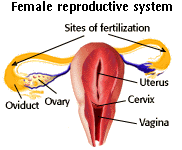

Human Reproduction Problem Set
Problem 8: Journey of the sperm to the egg
Tutorial to help answer the question
| For fertilization to occur, sperm are deposited in the female _________, then enter the __________ through the opening known as the __________, and travel to the ____________, the site of zygote formation. |
Tutorial
Female reproductive organs
|
During intercourse several hundred million sperm are released inside the vagina. The sperm swim rapidly to the uterus through the cervix. Only a few hundreds of the original sperm will travel up to the upper third of the Fallopian tubes (oviduct) where fertilization most often takes place.
After being ejaculated into the vagina, sperm live and are capable of fertilizing an egg for about 3 days. If during these 3 days ovulation occurs, one of those sperm will penetrate the egg and start a pregnancy. It takes about 6 days for the fertilized egg, called the blastocyst, to move through the Fallopian tube and implant itself into the lining of the uterus where it will develop for 9 months. |
 |


University of Arizona
Updated: July 15, 1999
Contact the Development Team
http://biology.arizona.edu
All contents copyright © 1996-99. All rights reserved.